pard
+ wkrm
The Austin Parks & Recreation Department manages over 300 parks. Volunteer sign-ups lived in email chains, work hours were reviewed only once a year, and underserved parks had no visibility into where help was truly needed. PARD asked our wkrm studio team to explore how volunteer coordination could be unified across its divisions.
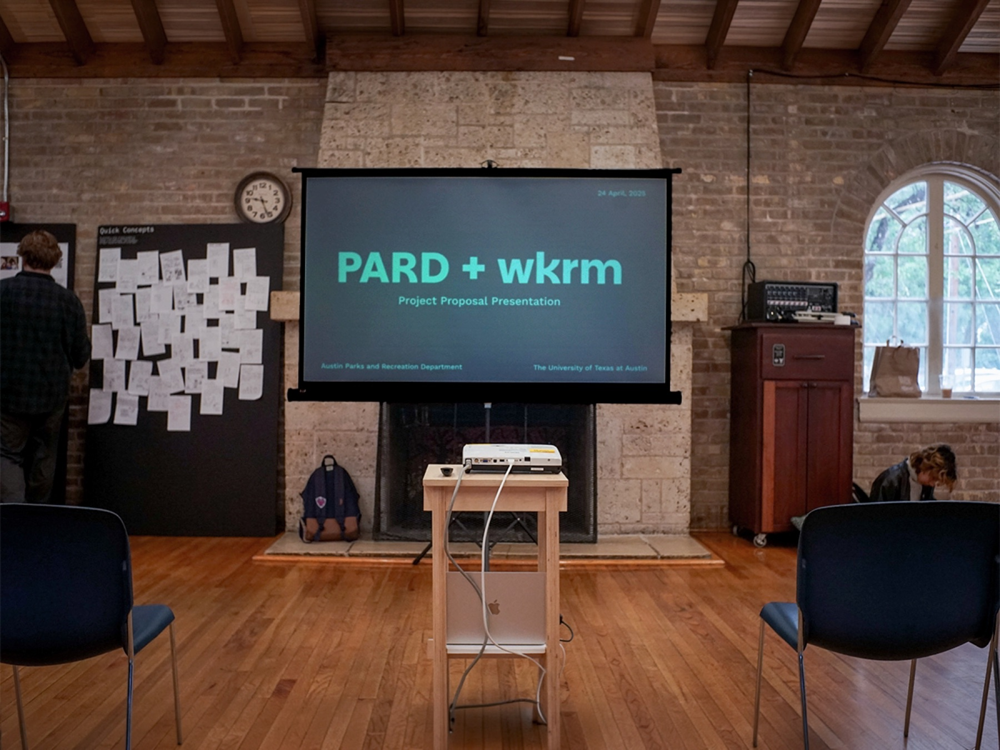
& dashboard design
2025
Lead · Jon Freach
UT Austin
how might we make
volunteering easier — for PARD and for austin?
That central question framed the whole project. We organised PARD's challenges into three themes — Coordination, Data, and Equity — which guided the rest of our research.
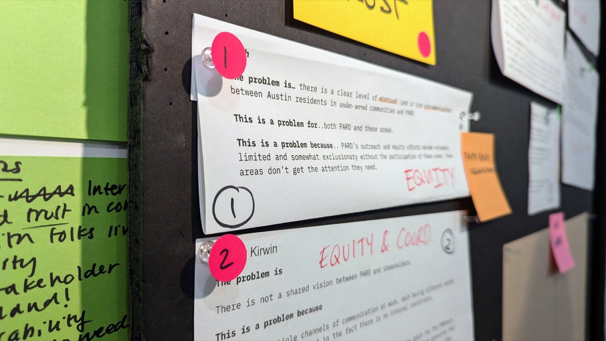
we went to the people who run the parks.
I co-led interviews with 8 PARD stakeholders across several divisions — coordinators, program managers, a community organiser, and a horticulture lead — then ran journey- and ecosystem-mapping sessions with them to locate the real pain points.
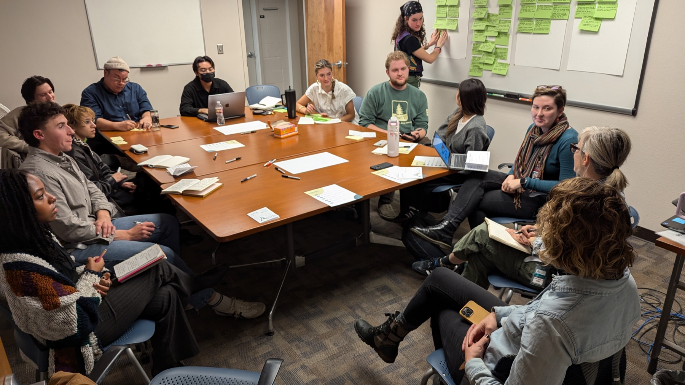
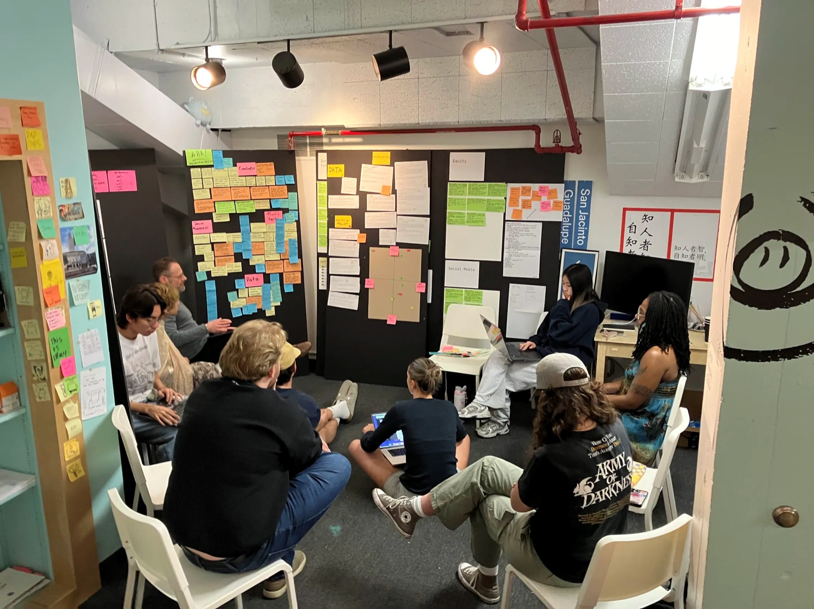
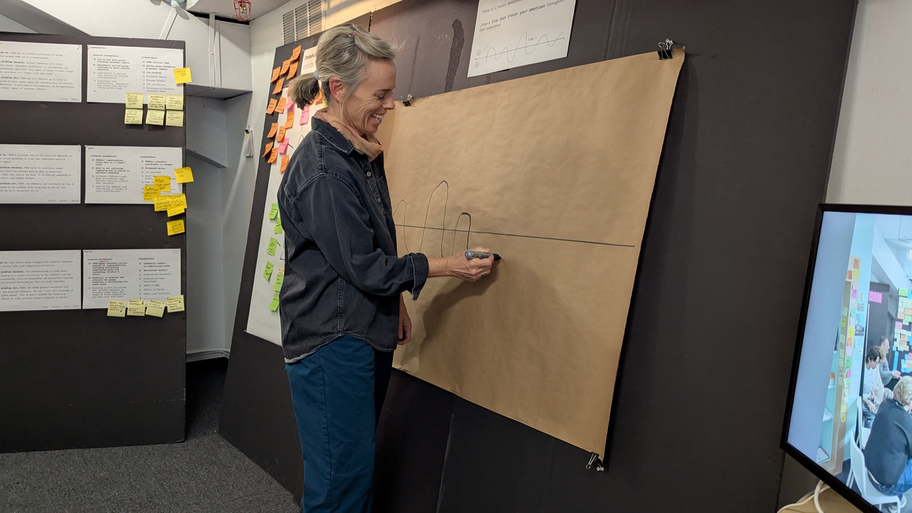
These weren't neglected communities — they were proud neighborhoods that needed PARD to support what was already there, not “renew” it.
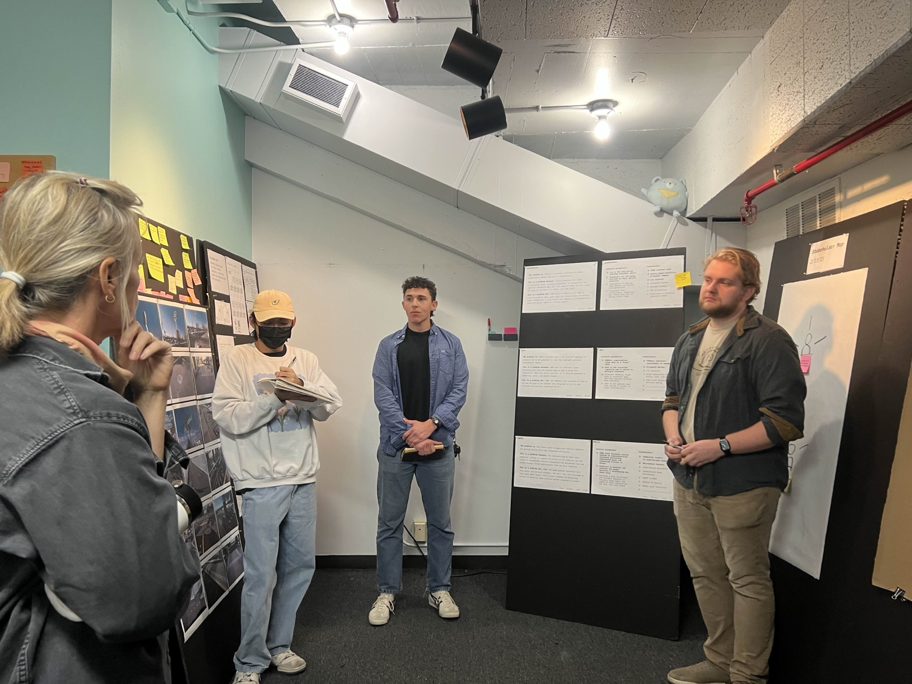
We also volunteered at “It's My Park Day” to observe the check-in process firsthand and survey participants — feeling the coordination gaps from the volunteer's side of the table.
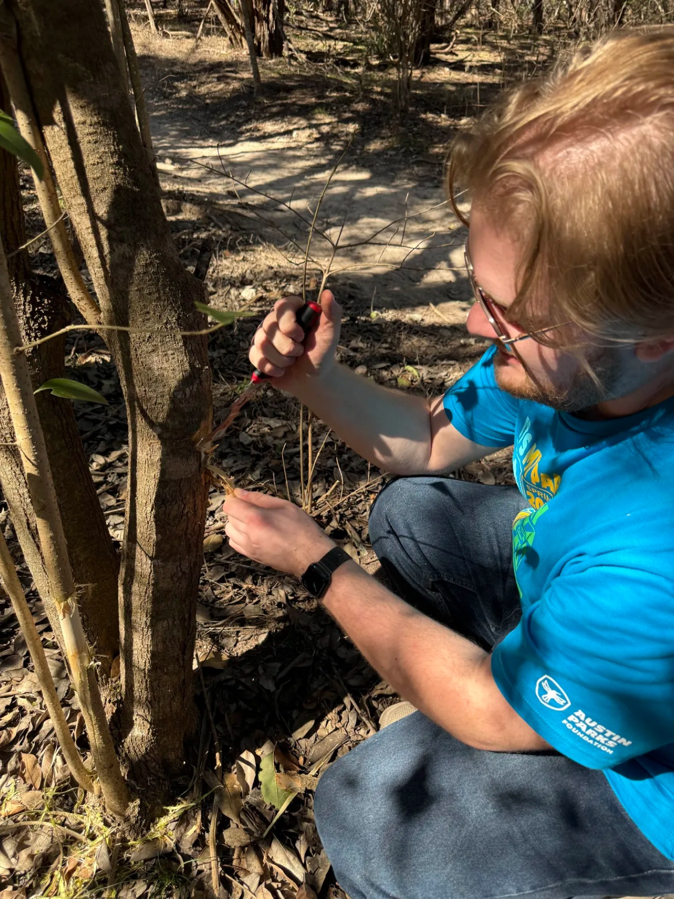
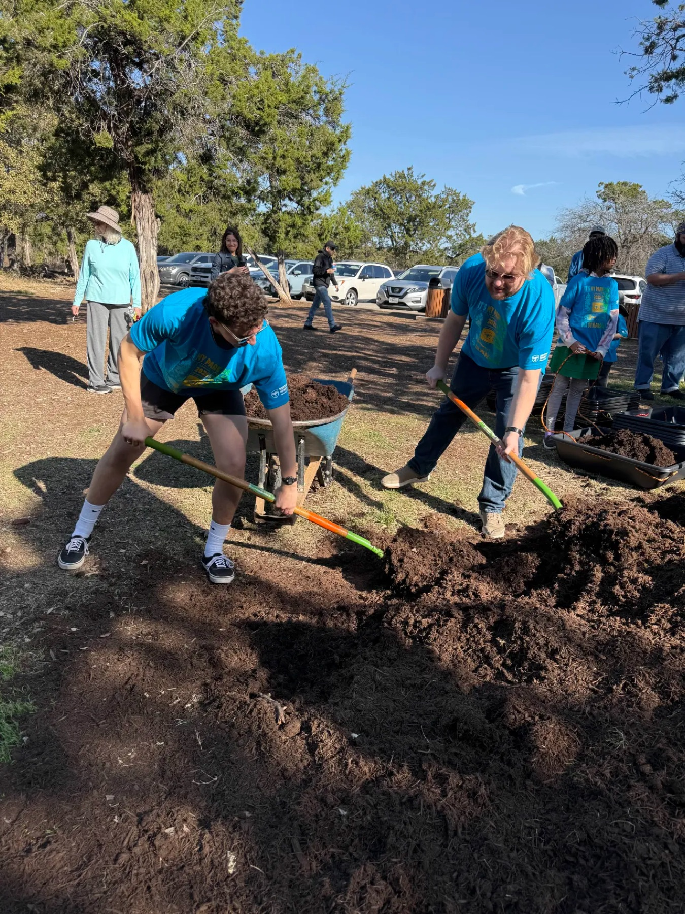
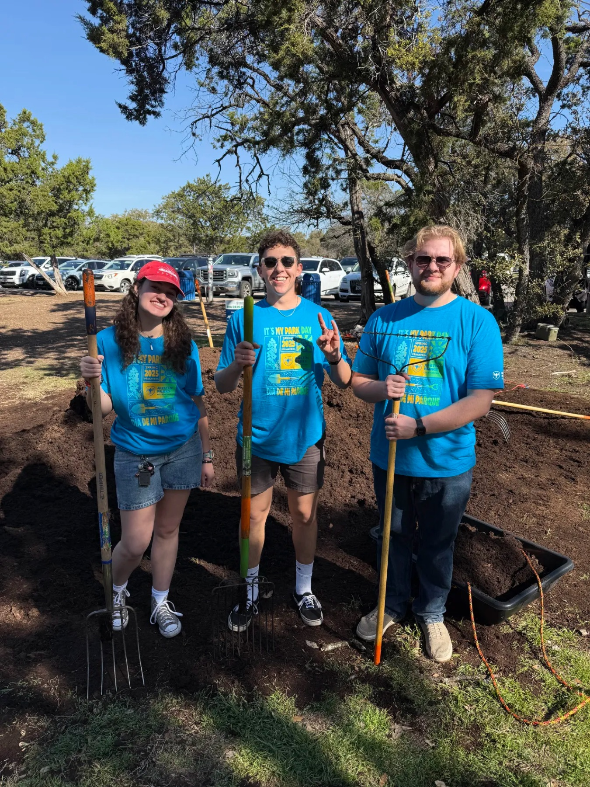
four stages became
four pillars.
Journey and ecosystem mapping surfaced pain points across four stages of the volunteer experience. Those stages became the pillars that structured every proposal.
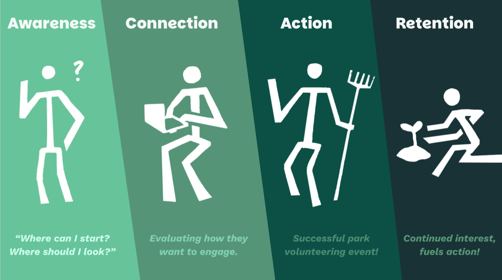
one dashboard,
one shared view.
I designed a Figma prototype of a new internal PARD dashboard — serving volunteer hours, an equity heat map, events, and a flow to approve volunteer opportunities. It's built to increase transparency across divisions, speed up communication between opportunity-seekers and admin, and surface the underserved parks the old system kept invisible.
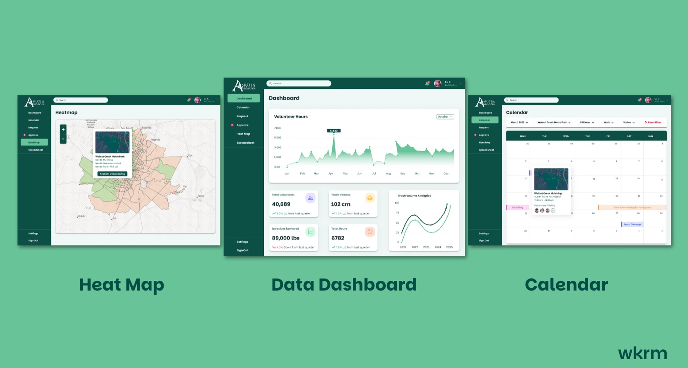
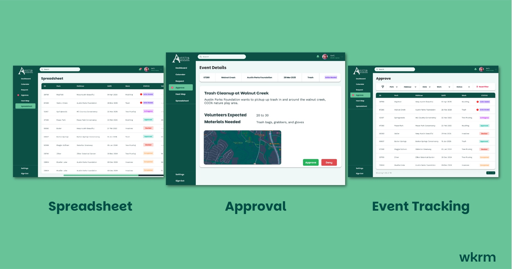
the brief ended —
the work didn't.
We presented to the City of Austin and PARD's executive leadership. The four-pillar framework gave them shared language to advocate for resources internally — and the work has already led to developments on a shared internal PARD dashboard.
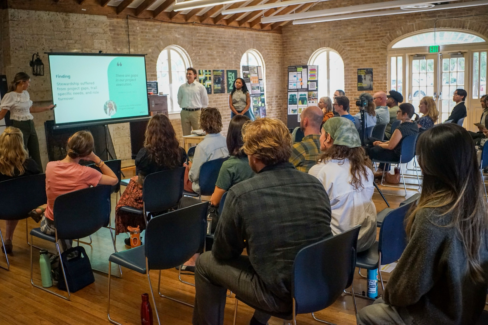
Your work was worthwhile … your insights and concepts will likely make their way into city-wide initiatives.
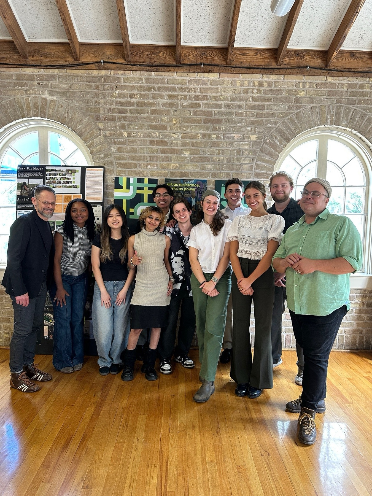